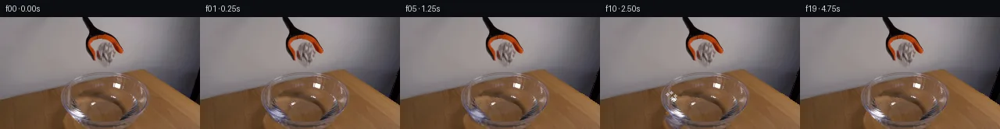

![首帧]()

Round 00
2026-11-06T04:01:57.731535+00:00像素候选变化代码 +432/−0inspection 更新
pixels 612ab2e8dd729174 · code 9c8325517dbfdd78
查看本轮 generate.py 真实 diff
--- previous/generate.py
+++ current/generate.py
@@ -0,0 +1,432 @@
+#!/usr/bin/env python3
+"""
+PixelWorld-Text: Paper release into water bowl animation.
+Generates 20 frames (256×144 RGB) at 4 fps showing an orange-black grabber
+tool releasing a crumpled piece of paper into a bowl of water on a wooden table.
+"""
+
+import numpy as np
+from PIL import Image, ImageDraw, ImageFilter
+from scipy import ndimage
+from pathlib import Path
+import sys
+
+# ── Configuration ────────────────────────────────────────────────────────
+CASE_DIR = Path('/mnt/bn/embodied-lf3/masiyuan/physics_iq_pixel_r2_full4fps/cleanroom_runs/deepseek-v4-pro/full_matrix_v1/text/case_0133_attempt_01/workspace')
+FRAMES = 20
+W, H = 256, 144
+FPS = 4
+
+# ── Load first frame ─────────────────────────────────────────────────────
+first_frame = np.array(Image.open(CASE_DIR / 'first_frame.png')).astype(np.float64)
+assert first_frame.shape == (H, W, 3), f"Expected (144,256,3), got {first_frame.shape}"
+
+# ── Scene analysis ───────────────────────────────────────────────────────
+brightness = first_frame.mean(axis=2)
+
+# Paper mask: bright connected region in the center area
+# Use a permissive threshold then filter by connected component
+paper_candidates = (brightness > 130) & (first_frame[:,:,0] > 130) & (first_frame[:,:,1] > 120) & (first_frame[:,:,2] > 100)
+# Exclude orange grabber
+orange_mask = (first_frame[:,:,0] > 120) & (first_frame[:,:,1] > 60) & (first_frame[:,:,2] < 95)
+paper_candidates = paper_candidates & ~orange_mask
+
+# Focus on the region where paper is visible: y 105-140, x 80-175
+sub_region = paper_candidates[105:141, 78:176]
+labeled, n_comp = ndimage.label(sub_region)
+
+# Find the largest component in this region (the paper)
+largest_size, largest_label = 0, 0
+for i in range(1, n_comp + 1):
+ size = (labeled == i).sum()
+ if size > largest_size:
+ largest_size = size
+ largest_label = i
+
+# Build the refined paper mask
+paper_mask = np.zeros((H, W), dtype=bool)
+if largest_label > 0:
+ paper_mask[105:141, 78:176] = (labeled == largest_label)
+
+# Dilate to include shadow edges
+paper_mask = ndimage.binary_dilation(paper_mask, iterations=3)
+
+# Also include slightly darker adjacent pixels that are part of the paper
+# (the crumpled paper has shadows)
+paper_region_ys, paper_region_xs = np.where(paper_mask)
+if len(paper_region_ys) > 0:
+ y_min, y_max = paper_region_ys.min(), paper_region_ys.max()
+ x_min, x_max = paper_region_xs.min(), paper_region_xs.max()
+ print(f"Paper mask: {paper_mask.sum()} pixels, y=[{y_min}:{y_max}], x=[{x_min}:{x_max}]")
+
+# ── Extract paper sprite and alpha ───────────────────────────────────────
+# Create a soft alpha for blending (feathered edges)
+paper_sprite = first_frame.copy()
+paper_alpha = paper_mask.astype(np.float64)
+
+# Feather the paper alpha (smooth edges)
+paper_alpha = ndimage.gaussian_filter(paper_alpha, sigma=1.0)
+paper_alpha = np.clip(paper_alpha, 0, 1)
+
+# ── Create clean background (inpaint paper area) ─────────────────────────
+# Replace paper pixels with plausible background by sampling from surrounding areas
+clean_bg = first_frame.copy()
+
+# For each paper pixel, fill with distance-weighted average of nearby non-paper pixels
+paper_pixels = np.where(paper_mask)
+if len(paper_pixels[0]) > 0:
+ # Create a binary mask of pixels to keep (not paper)
+ keep_mask = ~paper_mask
+
+ # Use iterative inpainting: repeatedly fill paper boundary pixels
+ bg_filled = first_frame.copy()
+ current_mask = paper_mask.copy()
+
+ for iteration in range(30):
+ if not current_mask.any():
+ break
… diff truncated; 345 more lines …